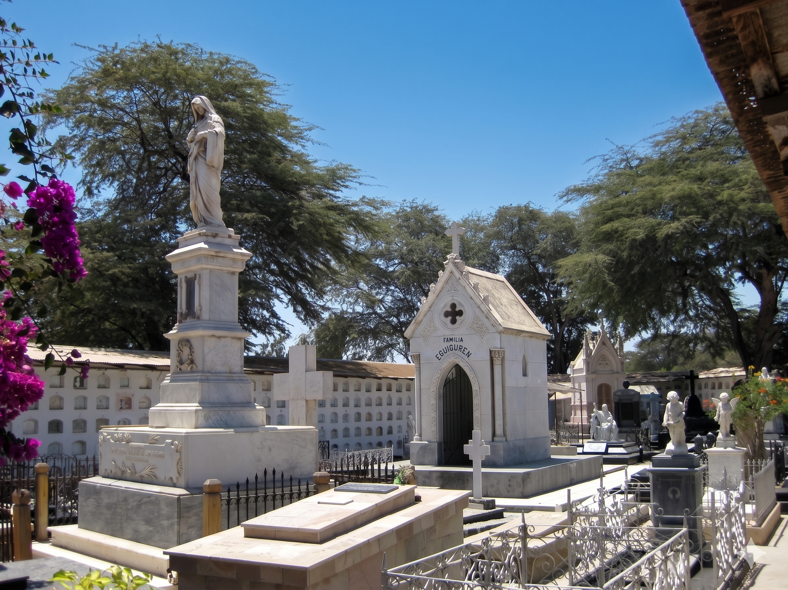

← VOLVER AL CATÁLOGO

El descanso de Miguel Grau
Héroe de Angamos.Ubicación: Cuartel San Teodoro
Material: Mármol esculpido
El ilustre héroe piurano...
Aquí va toda la narrativa extensa que la usuaria desea implementar para contar la historia de la pintura o el personaje, separada en párrafos cómodos de leer.